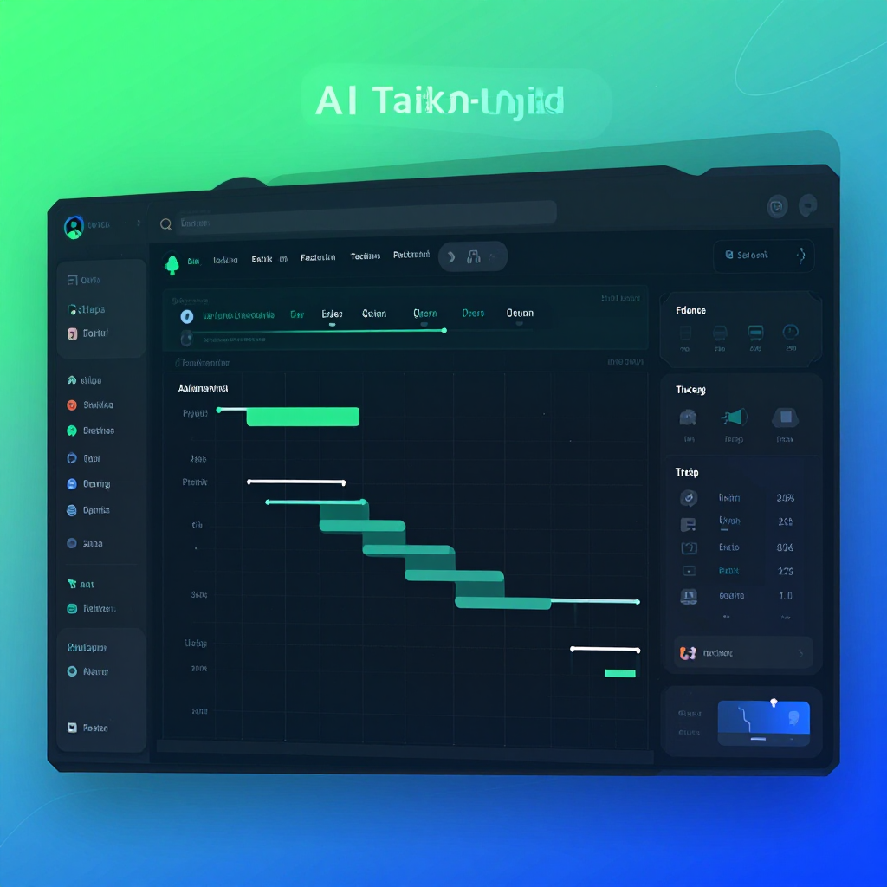

Best AI Project Management Tools 2026: Top 8 Compared
📅 Last Updated: March 29, 2026

📋 Table of Contents
Manage Projects Smarter with AI
AI project management tools predict timelines, automate task assignment, identify risks, and optimize resource allocation. These tools help teams deliver projects on time and under budget by leveraging machine learning on your project data.
| Tool | Best For | Price | AI Features | Rating |
|---|---|---|---|---|
| Asana AI | Best overall PM | Free / $11/mo | Smart rules, status summaries | 9.5/10 |
| ClickUp Brain | Best AI assistant | Free / $7/mo | AI writer, knowledge search | 9/10 |
| Notion AI | Best workspace AI | Free / $10/mo | AI writing, databases | 9/10 |
| Monday.com AI | Best visual PM | $9/seat/mo | AI automation, suggestions | 8.5/10 |
| Linear AI | Best for dev teams | Free / $8/mo | AI issue triage, cycles | 9/10 |
| Trello AI | Best simple PM | Free / $6/mo | AI suggestions, automation | 8/10 |
Asana AI — Best for Most Teams
Asana AI automatically generates project plans, predicts potential bottlenecks, summarizes project status, and suggests optimal task assignments. It integrates AI throughout the project management workflow without requiring separate AI tools. For more details, see our AI scheduling tools guide. For more details, see our AI automation tools guide.
Best Free AI Project Management
- Notion Free — AI-powered workspace with project tracking
- ClickUp Free — Generous free plan with AI features
- Trello Free — Kanban boards with basic AI automation
- Linear Free — Best for engineering teams
🎁 Free AI Tools Guide 2026
Download our free guide with 50+ AI tool comparisons, pricing, and recommendations.
Download Free Guide →📖 Related Articles
Pros & Cons at a Glance
Notion AI
✅ Pros
• All-in-one workspace
• AI summaries and writing
• Flexible databases
❌ Cons
• $10/month for AI
• Learning curve
• Can be slow
Asana AI
✅ Pros
• Smart project timelines
• Workload management
• Team collaboration
❌ Cons
• $11/month starting
• Complex for simple projects
• AI features on paid only
Monday.com AI
✅ Pros
• Visual project boards
• AI task suggestions
• Automation recipes
❌ Cons
• $9/month starting
• Expensive at scale
• Limited free plan
ClickUp AI
✅ Pros
• AI writing assistant
• Docs + tasks combined
• Free tier
❌ Cons
• $5/month for AI
• Feature overload
• Can feel cluttered
Taskade AI
✅ Pros
• AI-powered workflows
• Mind mapping
• Free tier generous
❌ Cons
• $8/month pro
• Smaller community
• Limited integrations
Frequently Asked Questions
What is the best AI project management tool?
Notion AI is the best all-in-one project management tool with AI features. Asana AI is best for structured project timelines, and Monday.com AI is best for visual project boards and automation.
Can AI manage projects automatically?
AI project management tools can automate task assignment, predict project timelines, identify bottlenecks, generate status reports, and suggest resource allocation. However, human oversight is still essential.
Is there a free AI project management tool?
Notion offers a free tier with basic workspace features (AI costs extra). ClickUp has a generous free tier with AI writing features. Taskade AI offers a free tier with AI-powered workflows.
How does AI improve project management?
AI improves project management by predicting task durations, automating status updates, identifying risks early, suggesting optimal task assignments, generating meeting summaries, and tracking team workload automatically.
Which is better: Asana or Monday.com?
Asana is better for managing complex projects with multiple timelines and dependencies. Monday.com is better for visual workflow management and team collaboration. Both now offer AI features on paid plans.
Manage Projects with AI
Deliver projects faster with AI-powered project management.
Read Notion AI Review